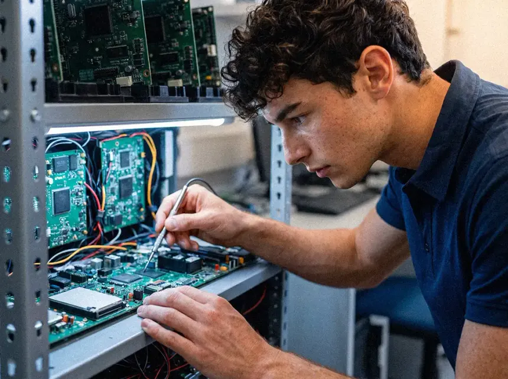
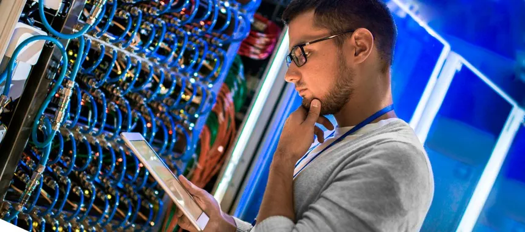

Ciclos de Informática
SMR - Sistemas Microinformáticos y Redes

Qué se estudia: montaje de equipos, sistemas operativos, redes y aplicaciones.
Día a día: instalarás componentes, configurarás ordenadores y resolverás problemas técnicos.
Duración: 2.000 horas, normalmente en dos cursos.
Acceso: título de ESO u otras vías recogidas por la normativa.
Salidas: soporte técnico, instalación de equipos y mantenimiento de redes.
ASIR - Administración de Sistemas Informáticos en Red

Qué se estudia: servidores, redes, sistemas operativos, bases de datos y seguridad.
Día a día: configurarás servidores, administrarás usuarios y supervisarás sistemas.
Duración: 2.000 horas, normalmente en dos cursos.
Acceso: Bachillerato o título de Técnico de grado medio y otras vías.
Salidas: administración de sistemas, redes y soporte especializado.
DAM - Desarrollo de Aplicaciones Multiplataforma
Qué se estudia: programación, bases de datos, interfaces y acceso a datos.
Día a día: escribirás código, crearás aplicaciones y probarás sus funciones.
Duración: 2.000 horas, normalmente en dos cursos.
Acceso: Bachillerato o título de Técnico de grado medio y otras vías.
Salidas: desarrollo de aplicaciones móviles, web o de escritorio.
DAW - Desarrollo de Aplicaciones Web
Qué se estudia: HTML, CSS, programación web, bases de datos y servidores.
Día a día: diseñarás interfaces, programarás funciones y publicarás aplicaciones web.
Duración: 2.000 horas, normalmente en dos cursos.
Acceso: Bachillerato o título de Técnico de grado medio y otras vías.
Salidas: desarrollo y diseño de aplicaciones y páginas web.